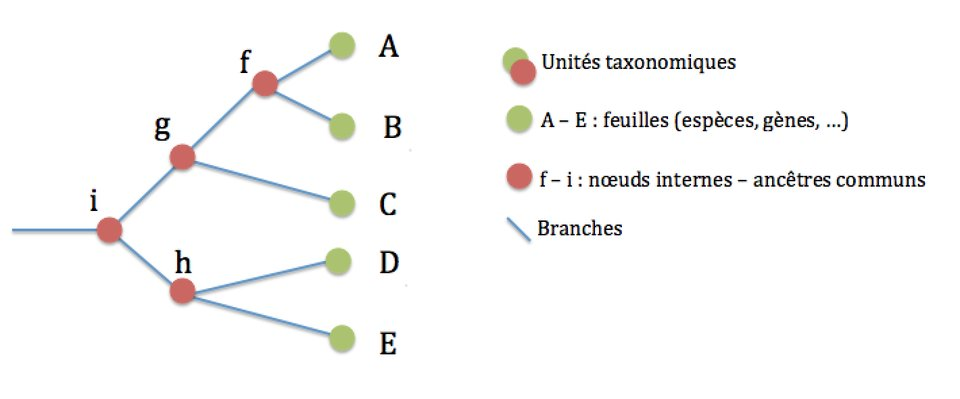

Rapport du projet de M1
Combien de temps pour faire une espèce ?
2021
Chapter 1 Introduction
1.1 Motivation
La classification du vivant est depuis longtemps un vrai casse-tête pour les biologistes, surtout en ce qui concerne la notion d’espèce. De fait, il existe plusieurs définitions du mot espèce, ce qui rend encore plus compliqué un consensus. C’est pour cela que dans la suite nous ne nous étendrons pas sur cette notion et nous ne nous concentrerons que sur des espèces prédéfinies.
Les arbres phylogénétiques sont des outils permettant de représenter graphiquement certaines données de classification. En effet, ils présentent les relations de parenté entre espèces. On retrouve dessous différentes espèces actuelles, mais aussi leurs ancêtres communs (les branchements évolutifs qui correspondent à l’apparition d’une nouvelle homologie), ou encore la durée avant l’apparition d’une nouvelle espèce qui est donnée par la longueur des branches.

Dans la suite, nous nous intéresserons aux branchements évolutifs.
Supposons qu’un branchement évolutif apparaît après une durée aléatoire d’une loi fixée \(\mu\) indépendamment du passé et du futur évolutif des espèces.
Quelle est cette loi \(\mu\)? Sa variance ? Sa moyenne ?
On observe des branchements successifs qui composent l’arbre phylogénétique et à partir de ces données quantitatives observées, on veut estimer la fonction de densité \(f\) qui donne la probabilité qu’un nouveau branchement évolutif apparaisse après un certain temps.
Formellement on a le modèle densité suivant, soient les vecteurs aléatoires \(X_1,\dots,X_n\) tel que \(n \in \mathbb{N^*}\) à valeur dans \(\mathbb{R}\), indépendants et identiquement distribués de longueurs de branche observées qui ont pour une fonction de densité \(f\) par rapport à la mesure de Lebesgue sur \(\mathbb{R}\) supposée inconnue. Notre objectif est d’estimer cette fonction densité f sur laquelle on fait le moins d’hypothèses possibles. On fera seulement les hypothèses d’existence, de continuité et de positivité de la fonction,en servant une observation \((X_1,...X_n)\), ce qui nous mène en statistique non-paramétrique, où le paramètre cherché est une densité de probabilité qui appartient à un espace fonctionnel infini, d’où la problématique de notre sujet.
1.2 Problématique
Comment estimer la loi de densité de la création d’une nouvelle espèce avec une méthode d’estimation non-paramétrique ?
Pour commencer, en se basant sur quelques définitions nous présenterons les méthodes d’estimations non-paramétriques et en introduisant quelques types d’estimateurs. Par la suite, nous approfondirons les estimateurs de densité à noyau en menant une discussion sur leurs critères d’évaluation. Ainsi nous consacrerons un chapitre pour présenter des méthodes adaptatives. Enfin, pour répondre à la problématique, nous implémenterons un estimateur à noyau adaptatif, de type Goldenshluger-Lepski puis l’utiliser sur des données d’arbres phylogénétiques.